|
||||
2017年11月5日 |
||||
１１月 中華 正月料理 3. 有頭エビのチリソース |
||||
 |
||||
2017年10月21日10月ワインクラス2017年10月ワインクラス〜第51回++++++++++++++++++++++++++++
秋も深まり、ワインも美味しい季節になりました。  ★シャンパーニュ ブラシャン・シャピュ ブリュット・セレクション ”テラ・ヴィ ティス”農法〜自然への優しさとこだわり  ★白ワイン（ポルトガル・ヴィーニョベルデ地方） コンセイト・ワインズ アルバリーニョ２０１４年 女性醸造家を代表するトップ醸造家！！  ★赤ワイン（イタリア・トスカーナ地方） ルイジ・ピラ バローロ・マレンカ２０１３年 力強さに魅かれて ★赤ワイン（カリフォルニア・ルシアンリヴァーヴァレー） ダットン・ゴールドフィールド ピノ・ノワール ダットン・ランチ２０１５年 山火事のニュース大変驚きました、、、哀悼の意を捧げます ★甘口酒精強化ワイン（ポルトガル・セトゥーバル半島） ジョゼ・マリア・ダ・フォンセカ アランブル・モスカテル・デ・セトゥーバル ポートワイン、マデイラワインと並ぶポルトガル３大酒精強化ワイン！ 本日のデザート山鹿産の太秋柿と相性GOOD★ 次回は11月21日（火）どうぞよろしくお願いいたします。 紅茶教室Pico Teaピコティー http://www.picotea.net/ |
||||
2017年09月30日9月ワインクラス☆祝50回2017年9月ワインクラス〜第50回
2013年春に始まりましたワインクラス 9月で50回を迎えました！！  記念の乾杯  オードブル〜フリッター  いつも美味しいお土産ありがとうございます〜マデラ島土産マデラケーキ  これまでの御礼の気持ちを花束に込めて…  次回は10月17日（火）どうぞよろしくお願いいたします。 紅茶教室Pico Teaピコティー http://www.picotea.net/ |
||||
017年09月24日10月お料理教室10月 西洋料理 イタリアン
１．いわしのマリネード? ２．なすの煮ものイタリア風? ３．フジッリのアラビアータ    いわしのマリネ―ドとなすの煮ものは サンドイッチにしても美味しいです！ 紅茶教室Pico Teaピコティー http://picotea.net |
||||
2017年09月02日8月ワインクラス2017年8月ワインクラス〜第49回
残暑お見舞い申し上げます 本日のオードブル〜鶏砂肝ときのこのフリカッセブルゴーニュ風  ★シャンパーニュ ジ・ド・テルモン グラン・ヴィンテージ・ブリュット2005年 100年続く生産者〜Ｊ．ド・テルモン  ★白ワイン（クロアチア） ヤンチャール シュクレット2015年 シュクレット種はクロアチアにしか存在しないそうです 今日の和食に一番合う！！ ★白ワイン（イタリア/フリウリ・ヴェネツィア・ジュリア州） クロアット シャルドネ2015年 ★赤ワイン（フランス・ブルゴーニュ地方） ドメーヌ・クリストフ・ヴィオロ・ギュイマール ポマール ラ・ヴァッシュ2009年 当主が変わり、ビオワインがこの造り手の特徴です  ★マデイラワイン（ポルトガル・マデイラ島 酒精強化ワイン） ブランディーズ社 ヴェルデーリョ5年（中辛口タイプ） “癖のあるものでもなんでも包み込んでくれる懐の大きなワインです”  次回は9月26日（火）どうぞよろしくお願いいたします。 紅茶教室Pico Teaピコティー http://www.picotea.net/ |
||||
2017年09月01日9月お料理教室9月に入り、ようやく残暑も和らぎました。
9月は「認知症予防食」です。 １．アボカドとマグロ丼 ２．主菜 小松菜と厚揚げのオイスター炒め ３．副菜 トマトとスプラウト ４．常備菜 とり肉の塩麹蒸し ５．吸物 季節のもの 紅茶教室Pico Teaピコティー http://picotea.net |
||||
2017年07月29日8月お料理教室＋＋＋＋＋＋＋＋＋＋＋＋＋＋＋＋＋＋＋＋ |
||||
| 8月の和食 １．ご飯 炊きおこわ ２．汁 揚げなすのみそ汁 ３．酢のもの 博多あちゃら漬 ４．煮物 イカと焼豆腐と九条ねぎ ５．甘味 挽茶かん |
||||
2017年07月25日7月ワインクラス2017年7月ワインクラス〜第48回
暑中お見舞い申し上げます スパイシーな洋食とワインのマリアージュ 本日のオードブル〜生ハムメロン  ★シャンパーニュ ベレッシェ・エ・フィス クリュ・セレクショネ・モンターニュ・グランクリュ・４８モワ・ド・カーヴ 新世代の象徴的な醸造家〜ラファエル・ベレッシュ氏  ★白ワイン（フランス・ロワール地方） ドメーヌ・ドラポルト サンセール・ブラン・レ・モン・ダネ2015年 ★ロゼワイン（イタリア・シチリア島） クズマーノ ラムーザ2016年 ロゼ  ★赤ワイン（フランス・ブルゴーニュ地方） セリエ・デ・ウルシェリーヌ ニュイ・サン・ジョルジュ・ル・シャルボニエール2001年  次回は8月29日（火）どうぞよろしくお願いいたします。 紅茶教室Pico Teaピコティー http://www.picotea.net/ |
||||
| 7月洋風料理 １．チキンソテーカレー風味 ２．冷製クリームスープ ３．ダッチベイビーのサラダ |
||||
|
||||
6月ワインクラス2017年6月ワインクラス〜第47回
初夏の和食とワインのマリアージュ 本日のオードブル〜アスパラ オランデージソース添え  ★シャンパーニュ エグリ・ウーリエ ブリュット・レ・ヴィーニュ・ド・ブリニー ★白ワイン（ポルトガル・ヴィーニョヴェルデ） ヴィラ・ノヴァ ウィーニョ・ヴェルデ2015 シャルドネ イ・ヴィーニ・ディ・ヤコポ  ★白ワイン（フランス・ロワール） フランソワ・シデーヌ モンルイ・シュール・ロワール レ・ショワジール2015年 ★赤ワイン（フランス・コート・デュ・ローヌ地方） ドメーヌ・ド・ラ・モルドレ シャトー・ヌフ・ド・パブ"レイヌ・デ・ボワ"1998年 次回は7月18日（火）どうぞよろしくお願いいたします。 |
||||
6月お料理教室6月の和食
１．親子丼 ２．けんちん汁 ３．6月の漬物 ４．たけのこ豆腐の梅あんかけ ５．夏みかんの淡雪かん  早くも真夏日が続きます ご自愛くださいませ。 |
||||
2017年05月22日5月ワインクラス2017年5月ワインクラス〜第46回
イタリア料理とワインのマリアージュ  本日のオードブルです  ★シャンパーニュ ポール・ベルトロー キュヴェ・レゼルヴ  ★白ワイン（イタリア・フルウーリ） ネコティウム シャルドネ イ・ヴィーニ・ディ・ヤコポ ★赤ワイン（イタリア・シチリア島） フェウド・モントーニ セレッツィオーネ・ヴェルカラ2011年 ★赤ワイン（フランス・ヴェネト州） ヴィッラ・アンナベルタ アマローネ・デッラ・ヴァルポルチェッラ 次回は6月20日（火）どうぞよろしくお願いいたします。 |
||||
2017年05月05日 |
||||
| 5月 イタリア料理 １．前菜 キュウリのサラダ ２．第一の皿 イワシのスパゲッティシシリア風 ３．第二の皿 豚フィレ肉のソテープラム添え ４．デザート クランペットとマイルドキャラメルソース |
||||
| １．前菜 キュウリのサラダ | ||||
| ２．第一の皿 イワシのスパゲッティシシリア風 | ||||
| ３．第二の皿 豚フィレ肉のソテープラム添え |
||||
| ４．デザート クランペットとマイルドキャラメルソース | ||||
2017年04月19日4月ワインクラス
|
||||
2017年04月10日3月ワインクラス2017年3月ワインクラス〜第44回
和食に合わせたオードブル〜ロックフォールを使って  ★シャンパーニュ ランスロ・ピエンヌ ターブル・ロンド・ブリュット  ★白ワイン（フランス・ロワール地方） アルフォンス・メロ サンセール ラ・ムシエール2015年 エレガンスな主役 ★白ワイン（フランス・ブルゴーニュ地方） ミシェル・ブズロー ブルゴーニュ・シャルドネ2013年 リッチでエネルギッシュ 本日の二大白ワイン、王道どうしですが全く味わいが異なります！ ★赤ワイン（フランス・ブルゴーニュ地方） メゾン・ロッシュ・ド・ベレーヌ（コレクション・ベレナム） シュヴレ・シャンベルタン ヴィエイユ・ヴィーニュ2001年 ニコラ・ポテル氏監修  次回は4月18日（火）どうぞよろしくお願いいたします。 |
||||
2017年03月28日4月お料理教室4月 アジア料理
１．ワンプレート料理 ２．スープ タイスキ風（タイの鍋料理） ? ３．デザート いちごのキャラメルソテー  ガーリックチキンライスソースに タイ黒しょうゆを使います  ワンプレート料理に紅茶を添えていただきます |
||||
2017年03月01日3月お料理教室3月の和食
１．お吸物 ２．お刺し身 ３．帆立とじゃがいも飯 ４．煮物 ふろふき大根玉みそかけ ５．煮魚 鯖のみそ煮  ふろふき大根  はまぐりやうど 春の和食です  紅茶教室Pico Teaピコティー http://picotea.net |
||||
2017年02月22日2月ワインクラス2017年2月ワインクラス〜第43回
ゲストをお迎えして、卵のオードブルとともに   ★スパークリング（クレマン・ド・ブルゴーニュ/フランス・ブルゴーニュ） ルーデュモン（仲田さん） クレマン・ブルゴーニュ・ブラン・ド・ブラン 1500ml 日本人醸造家「仲田晃司さん」のドメーヌ  ★白ワイン（フランス・ブルゴーニュ地方） ドメーヌ・ジャン・ミシェル・ゴヌー ピュリニー・モンラッシェ“レ・フォラティエール”2009年 時には“ピュリニー・モンラッシェ最高の一級”と評される区画より 絹のような味わい ★白ワイン（フランス・アルザス地方） ウィリ・ギッセルブレッシュトゥ ピノ・ブラン2014年 ★赤ワイン（イタリア・ピエモンテ州） アルド・コンテルノ ランゲ2012年  ★赤ワイン（チリ/マイポヴァレー） ペルス・クルス ケレン スペシャル・セレクション2005年 「ケレン」はロゴにもなっている丘の名前です。   次回は3月28日（火）どうぞよろしくお願いいたします。 紅茶教室Pico Teaピコティー http://www.picotea.net/ |
||||
2017年02月01日2月お料理教室2月といえば、最も寒い時期
本格的な暖かさが待ち遠しいものです。 冬の西洋料理 ２月 １．かきのチャウダー ２．海老入りグラタンライス ３．デザート オムレット やさしいお味のチャウダー＆グラタンライス  あまおうを使ったオムレット  紅茶教室Pico Teaピコティー http://picotea.net |
||||
2017年01月18日1月ワインクラス2017年1月ワインクラス〜第42回 HP担当からの追記：1年半前まで住み慣れた百道浜の写真を見て |
||||
2017年01月09日おせち教室２０１７2016年12月30日・31日
スタジオクレエ「おせち料理教室」開催 二日間にわたって、20品のおせち料理を作ります。 今年は立派な栗を甘露煮に、 柿のジュレを使って柿の寒天寄せに、 伊達巻きレシピが新しくなりました！ 完成したお重とともに記念撮影 豊川先生、皆様、大変お世話になりました。  スタジオ・クレエのＨＰ「生徒の声」に 素敵な方のおせちが掲載されています。 ぜひご覧ください。 紅茶教室Pico Teaピコティー http://www.picotea.net/ |
||||
2017年01月06日1月お料理教室昨年もスタジオ・クレエで沢山のご縁をいただきました。
誠にありがとうございます。 年末は恒例のおせち教室も開催されました！ 次回のブログでご報告いたします。。。  ２０１７年、中華からスタートです。 今年もよろしくお願い申し上げます。  １月の中華 １．豚肉の亀甲蒸し ２．中華いり玉 ３．白菜の甘酢炒め  紅茶教室Pico Teaピコティー http://picotea.net 12月ワインクラス2016年12月ワインクラス〜第41回 |
||||
2016年12月07日12月お料理教室１２月 伝統の味を作りましょう
１．赤飯 ２．いなり寿司 ３．しんじょ椀    スタジオ・クレエ特製シュトレン 今年も美味しく出来上がっています。 ご注文の方々どうぞお楽しみに★ メリークリスマス★★★ 紅茶教室Pico Teaピコティー http://picotea.net |
||||
以下の写真は、2015年12月以前の記録です！ |
||||
12月ワインクラス2015年12月ワインクラス〜第32回 |
||||
12月お料理教室１２月 日本料理
 １．飯／里芋がゆのあんかけ ２．白菜の博多漬け ３．炙りしめ鯖となます ４．汁／小吸のみそ汁    いよいよ師走、今年もお世話になりました。 お正月料理にもぜひどうぞ。。。 紅茶教室Pico Teaピコティー http://picotea.net |
||||
11月ワインクラス2015年11月ワインクラス〜第31回
★スプマンテ（イタリア） Ivi Vino Brut イヴィ・ヴィーノ ブリュット フルーツ＆チーズと相性GOOD   ★白ワイン/フランス・ロワール Pouilly Fume プイィ・フュメ ★赤ワイン/フランス Gigondas Grand Grenache 66 ジゴンダス・グラン・グルナッシュ66 ★デザートワイン/ドイツ・モーゼル地方 Niederberg Helden Spatlese ニーダーベルグ ヘルデン シュペートレーゼ     今年も残すところ、、、12月は15日（火）です。 紅茶教室Pico Teaピコティー http://www.picotea.net/ |
||||
11月お料理教室１１月 西洋料理
１．ポーク＆フルーツカレー ２．サラダニース風 ３．洋なしのパイ包み  実りの秋、 日ごとに気温が低くなります。 フルーツカレーとパイ包み 秋の豊かさを実感します！  紅茶教室Pico Teaピコティー http://picotea.net 2015年10月28日 |
||||
2015年10月22日10月ワインクラス〜第30回中華を囲んで
 ★シャンパーニュ（フランス） アグラパール ブラン・ド・ブラン・グランクリュ”テロワール” ニール・ベケット著「死ぬ前に飲むべきワイン1001」にも選ばれています！ ★白ワイン/南アフリカ・ヘルマナス アルヘイト カルトロジー 2014年 ワインクラス初登場☆南アフリカ産 2011年ファーストヴィンテージ ★赤ワイン/イタリア・ピエモンテ州 アルド・コンテルノ バルベラ・ダルバ 2011年 家紋のようなマークが印象的  ★貴腐ワイン/フランス・ロワール地方 マルク・ブレディフ ネクター・ヴーヴレ・モワルー 1986年 来月はボジョレー月で、 11月17日（火）です。 紅茶教室Pico Teaピコティー http://www.picotea.net/ |
||||
9月ワインクラス2015年9月ワインクラス〜第29回 和食とワインのマリアージュ 今回よりY様を迎えて  ★フランチャコルタ（イタリア・ロンバルディア州） カ・デル・ボスコ キュヴェ・プレステージュ 1500ml マグナムボトルの特性 酸味が穏やかで甘味を感じます。  ★白ワイン/オーストリア・トライゼンタール地方 マルクス・フーバー リースリング 2013年 はちみつ香るゼリーと相性GOOD  ★赤ワイン/フランス・ブルゴーニュ地方 デュボワ・ベルナール サヴィニ・レ・ボーヌ 1997年 ブルゴーニュとマルスワイン 10種のおかずに合わせて丁寧に味わいました。  ★赤ワイン/日本・山梨県 マルスワイン シャトー・マルス日之城キャトル・ルージュ2010年  |
||||
紅茶教室”ピコティ”で新講座が開設されましたので紹介します。この講座は、「アフタヌーン・ティー＆プロトコール」としてプロトコール国際儀礼を学ぶことと紅茶の奥深さをさらに極めるために開設されたとても素晴らしい講座です。新講座開講 ＜ピコティHPのブログよりの転載＞新講座「アフタヌーン・ティー＆プロトコール」
初回のランチョン 「さけのムニエル」 「野菜とサフランのコンソメスープ」 クリームティーで秋を感じて アッサムセカンドフラッシュのミルクティーと スコーン ![DSCN6717[1].JPG](http://picotea.sakura.ne.jp/sblo_files/picotea/image/DSCN67175B15D.JPG) いちじくジャムとクロテッドクリームをココットに 記念すべき第一回は 初対面の自己紹介として握手レッスンを行いました。 次回は国際儀礼としてのプロトコール 年末のノーベル晩餐会が今から楽しみです！ ぜひご覧くださいませ。 ![DSCN6704[1].JPG](http://picotea.sakura.ne.jp/sblo_files/picotea/image/DSCN67045B15D.JPG) |
||||
10月11日
|
||||
| 「8月のワイン教室」は、小生 I のレッスン最終回として豊川先生のお取り計らいで歓送会として特別メニューで開催していただきました。以下はその報告です。 |
||||
| 料理の出来上がり後に、とりあえずビールで乾杯です。料理を少しつまみながら美味しかった！ | 料理の出来上がりです。特別メニューのローストポークがメインです。 | |||
| いつものようにシャンパンからワイン教室は始まりました。 | ワインを飲みながらいつも通りの試食会です。 | |||
 |
||||
| ローストポークと編集者が持参した自慢の「ルシアンクッキー」です。 | 飲み干したワインたちと美味しい料理の完食結果の風景です。 | |||
| ７月 アジアンテイスト | ||||
| テーブルセッティング | 料理の出来上がり 試食会 | |||
| １．ズッキーニの韓国がゆ | ||||
| 黄色のズッキーニ あさりのとぎ汁で粥を作り、具を入れ弱火で煮る。 | ||||
| ２．にんじんサラダ | ||||
 |
||||
| にんじんのせん切り 緑豆春雨、干しエビ、ひき肉、ナンプラー、香西菜等で仕上げる | ||||
| ３．カツオのタタキ揚げ ハーブソース | ||||
| カツオのタタキの小麦粉まぶす 揚げて、ハーブソースで仕上げ | ||||
| ４．香港デザート 緑豆のひすい羹 | ||||
| 緑豆を煮て、こす 樋型に流し冷蔵 | ||||
| レッスン風景 | シャンパンで乾杯 楽しい試食会 | |||
| ６月 日本料理 春の重ね煮 | ||||
| １．夏みかんずし | 能古島のみかんをほぐす 人参、椎茸、かます干物などの具をいろいろ入れた”夏みかんずし”です。 | |||
| 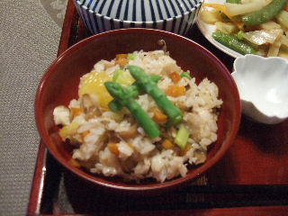 | ||||
| ２．豆乳汁 | キャベツ、じゃがいも、玉ねぎ、にんじんを万能だしで重ね煮。豆乳を入れて、”豆乳汁”の出来上がりです。 | |||
| 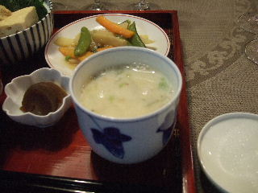 | ||||
| ３．豆腐の博多蒸し | 豆腐、豚バラ肉のたたきをすりおろし、卵、生姜等で調味し蒸す。割り醤油で”豆腐の博多蒸し”をいただく。 | |||
| 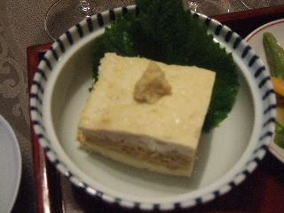 | ||||
| ４．春の重ね煮 | えんどう、セロリ、ジャガイモ、にんじんを重ね煮。山椒味噌を、合わせて”春の重ね煮”の出来上がり。 | |||
| 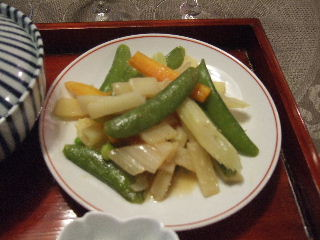 | 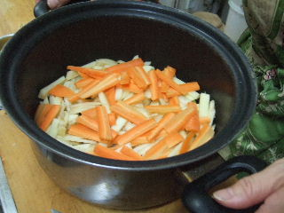 | |||
| 6月の日本料理 出来上がりです。 | まずはシャンパンで乾杯！ 今回も楽しいおしゃべりタイムで、皆さん笑顔です。 | |||
| 5月 西洋料理 | ||||
| 今月の料理は、西洋料理です！ | ||||
| １．乾燥ポルチーニ茸のスパゲッティ | テリアテッレ平めんにフランス土産のポルチーニ茸を使ったスパゲッティです。 | |||
 |
||||
| ２．チキンピカタ | とりむね肉にワイン・レモンで下味を付け、具材をまぶし揚げたピカタです！アボガドのサラダ添え | |||
 |
||||
| レモンタルト | タルトにレモンたっぷりのフィリングで仕上げたレモンタルトです。 | |||
| ワイン到着までのひと時、ビールでちょっと一服です！今日もシャンパンで乾杯です。 | ||||
| レッスン風景 | ||||
| 今回のワイン君たち | ||||
| 4月 韓国風料理 | 今月は、韓国料理の定番”ビビンバ”です。 | |||
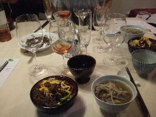
|
|
|||
|
ワイン教室での”今日のワインたち”です。 |
まずは中村さんからのワインレクチャーです。 スパークリングワイン”クレマン・ド・リムー”で乾杯！ |
|||
|
ビビンバのレッスン風景 |
から揚げ昆布の隠し味に、ナムル三種の盛り付けです。 錦糸卵を乗せコチジャンのトッピングで完成です！ |
|||
| 1月 中華料理 | ||||
| 年が明けて、今年最初の料理は中華です！今年もよろしくお願いします。 | ワイン教室では、いつも通りの乾杯から試食会がスタートしました。 | |||
| セッティング |  |
|||
| １．中華ちまき | ||||
せいろに薄皮を敷いて・・・ |
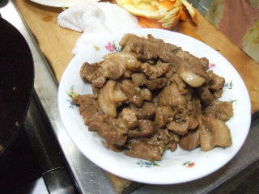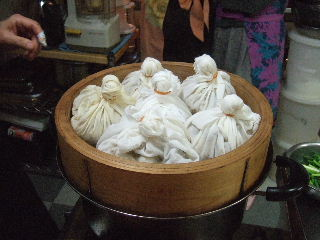 豚肉、干し椎茸、干しエビを調味料で煮詰めて、まず肉のみ取りだしておきます。もち米を炒めて残りの具と汁を 肉、うずら卵、甘栗をきれいに乗せて強火で蒸せば中華ちまきの出来上がりです！ |
|||
| ２．揚げえび | ||||
えびは、洗って足を処理し背を縦1/2に開きます。小麦粉を付け水溶き片栗粉で揚げます。 えび、ねぎを炒め、にんにくタレをかけて揚げえびの出来上がりです。 |
||||
| ３．貝柱サラダ | ||||
貝柱は、薄くスライス。オレンジは、きれいに皮をむきます。中華青菜の上にきれいに盛りつけて、中華ドレッシング 貝柱サラダは、見た目もきれいですし、味もさっぱりとオレンジの香りが心地良いです！ |
||||
| 料理のレッスン風景 | ||||
| にこにこと記念撮影 | ||||
| 今月の料理は、お肉と野菜のお正月用料理です。 | ||||
| 12月 お正月料理 | ||||
| レッスン風景 | 料理の出来上がり 試食会での乾杯風景 | |||
| １．牛肉のたたき | ||||
|
牛もも肉に、塩・コショウの下味をしっかりつける。両面に焼き色を付け、弱火でお好みの焼き加減に・・・。 白ネギ、にんにくで作ったタレに漬けて冷蔵。スライスして盛り付ければ、おいしい牛肉のたたきの出来上がり。 |
||||
| ２．おから汁 | ||||
|
まず、二番だしを作ります。大根の千六本切り。だしに、おからを入れ、味噌を溶き入れます。 トッピングに、青ねぎを入れておから汁の出来上がりです。 |
||||
| ３．つけもの手毬寿司 | ||||
手毬寿司用の具をいろいろな漬物で作ります。野菜の漬物作りは、まず塩こうじ作りからです。きゅうり、なすを漬けます。 白菜は、昆布、赤唐辛子で塩漬けします。その他の具材も彩りをよく用意します。 すし飯を丸め、野菜を巻きます。トッピングもいろいろな材料で用意します。手毬寿司は、子供にもとてもよろこばれそう！ |
||||
| ワイン教室での今月のワイン | 試食会風景。今年のしめくくりにふさわしいお正月用の豪華料理です。手毬寿司の彩がきれいです！ | |||
７月 夏食べたい料理 〜酢のもの |
今月の料理は、夏にふさわしい宮崎の郷土料理「冷や汁」と沖縄特産ゴーヤの「ゴーヤチャンプル」です！ | |||
| 料理教室のレッスン風景 | 料理の出来上がりです。 少しだけ試食した後の写真。 恒例のおしゃべりタイムの始まりです。 | |||
| １．冷や汁 | ||||
|
冷や汁のだしは、平戸あごです。頭と内臓を取って、一晩水につけてだしをとります。味噌は、合わせ味噌です。 豆腐、きゅうり、大葉を入れて出来上がりです。冷や汁だけでもおいしいですが、ご飯にかけて食べるのが最高です！ |
||||
| ２．ゴーヤチャンプル | ||||
|
夏バテ解消には、ゴーヤチャンプルがぴったりです。ちょっぴり苦いゴーヤも芯をしっかり取れば大丈夫です。 豚肉ロースを固めの豆腐で炒め、溶き卵をかけてゴーヤチャンプルの出来上がりです |
||||
| ３．鶏の酢の煮込み | ||||
|
手羽元に下味をつけてこんがり焼き色を付けます。セージ、ローズマリー、タイム等のハーブの香りがほのかに香ります。 白ワイン、美味酢（うまみす）を加え、スープ、オリーブを入れて鶏の酢の煮込みの出来上がりです。 |
||||
| 第3火曜日メンバーのなかよしUさんとＫさんです。 | 今回は、Ｉさん、Ｎさんも加わってにぎやかで楽しい試食会となりました。話題の中心は、先生の出版記念の話でした！ | |||
| 6月 和食 一汁三菜 | 初夏を迎えて新鮮な食材で作る一汁三菜の和食です。 | |||
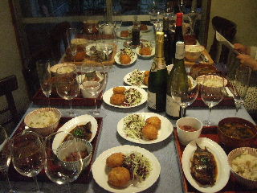 |
||||
| テーブルセッティング | 料理の出来上がり ワインで乾杯の試食会 | |||
| １．ポテトコロッケのコツ | ||||
|
まずは、ジャガイモの皮むきから・・・ 。 玉ねぎ、肉を炒め、調味してからジャガイモを良く混ぜる。空気を抜くことが大切な作業！ キャベツの添え物できれいに盛り付けです。 |
||||
| ２．カレイの山椒煮 | ||||
|
カレイは、きれいに洗って、調味料が溶けたら山椒の実を入れて、落し蓋をして煮ます。 強火から中火にして10〜12分煮たらカレイの山椒煮の出来上がりです。山椒の葉を添えて盛り付けです。 |
||||
| ３．ふきめし | ||||
|
ふきは、塩で板刷りしてゆがきます。すじをとって1cmカットにします。油揚げは、熱湯をかけて細切りです。 昆布汁で炊き上げたご飯に、煮あがったふきと油揚げを混ぜてふきめしの出来上がりです。 |
||||
| ４．金時豆の甘煮 | ||||
| 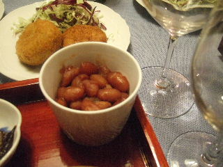 |
金時豆は、水につけて火にかけます。水を入れ替えて落し蓋でゆっくり煮ます。 同量の砂糖と塩少々を入れて、更に煮ます。そのまま煮汁を含ませればおいしい金時豆の甘煮の出来上がりです。 |
|||
| ５．みそ汁 | ||||
|
季節の旬の材料を使った味噌汁です。 いりこのはらわたをとって、いりこだしをまず作ります。新玉ねぎ、木の子を入れて、最後に手作りの味噌を |
||||
| コロッケを成形中のレッスン風景です。 | まずはシャンパンで乾杯をして、いつものようにたのしいおしゃべりタイムが続きます。 | |||
| 4月 中華料理 | 今月は中華です。初夏に向けてスタミナがつきそうなおいしい料理です。 |
|||
| 炒め方のレッスン | テーブルセッティング 試食会 | |||
| １．ピクルス | ||||
|
調理前に材料を準備します。野菜をすべて5mm角の短冊切りで半日干します。 ピクルス液に漬けて、一晩おけば出来上がりです。 さっぱり味のちょっぴり酸っぱいとてもおいしい中華風漬物ピクルス（酢漬け）の出来上がりです。 |
||||
| ２．ピクルスとひき肉の炒めもの | ||||
|
材料の下準備です。 ひき肉をしっかり炒めます。ピクルスを加えて、調味料を入れ手際よく炒めればピクルスとひき肉の炒めものの出来上がりです。 生徒さんの炒め方を見ていた先生が、たまらず手本を見せて下さいました。さすがフライパンのあおり方の手本です！ |
||||
| ３．スペアリブのレモン風味 | ||||
スペアリブを、レモンマーマレードを入れたソースで煮立てる。取り出して冷めたら、冷蔵庫で一晩寝かせる。 ジャガイモ、ミニトマトの付け合せをきれいに盛りつければ、スペアリブのレモン風味の出来上がり。 |
||||
| ４．スープ | ||||
 |
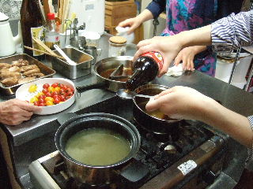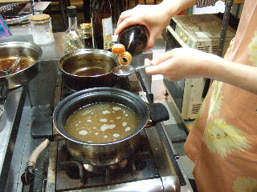 鶏がらスープに、調味料を入れ小ねぎのトッピングだけのシンプルなスープ。 左の写真は、ピコティーブログからの写真です。 |
|||
 |
||||
| 今月誕生日のお二人用”お誕生月会”デザート | お誕生月会特製デザートの準備 シャンパンで乾杯！おめでとうございます！ | |||
| ３月の和食 | ||||
| 今月は、春にふさわしく旬の野菜を使った和食です。サバのおろし煮をメインにうち豆ごはんもおいしかったです。 | ||||
| 料理の出来上がり | 大切な盛り付けのレッスン風景 楽しい試食会が始まる前の準備です。 | |||
| １．打ち豆ご飯 | ||||
|
大豆は、水に戻してうち豆で薄皮を丁寧に取ります。このひと手間が出来上がりの食感に大切です。 後は、椎茸、油揚げを調味料と共に炊くだけでうち豆ごはんの出来上がりです。 |
||||
| ２．新玉ねぎのみそ汁 | ||||
新玉ねぎのみそ汁には、やはり煮干しのだしですね。アクを取ることを忘れずていねいにだしをとります。 新玉ねぎを輪切りにして軟らかく煮てから、最後に手作りの味噌を漉して入れます。 |
||||
| ３．旬の白菜漬け | ||||
|
旬の白菜は、サッと洗って縦に切れ目を入れておきます。下漬けはあご塩で、本漬けはごま油と南蛮酢で漬けます。 左の写真は一人前です。量の多さに最初はびっくりでしたが、結局は皆さん完食でした。 癖になりそうなさっぱりさわやかな酸っぱさの残るおいしい旬の白菜漬けです。 |
||||
| ４．さばのおろし煮 | ||||
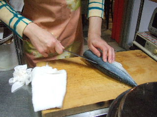 サバの三枚おろしもうまくできました。小麦粉をしっかりまぶして、こんがりと両面揚げます。 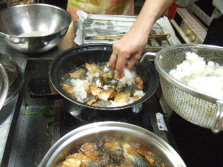 鬼おろしを入れ、ねぎを入れ、煮汁で一煮して出来上がりです。盛り付けも大切な作業です。
|
||||
| ５．ほうれん草のおひたし | ||||
|
ほうれん草の下拵え。弾力を残すゆがき方も教わりました。だしの下地にしばらくつけておきます。 うまだしは、しょう油代わりのほうれん草のお浸し用のタレです。タレはなくてもおいしいですが、好みでかけて食します。 |
||||
2月 西洋料理 |
||||
| 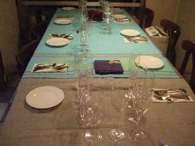 | ||||
| テーブルセッティング | 料理の出来上がり | |||
| １．牛肉のビール煮 | ||||
|
牛肉のビール煮の肉は、伊万里牛のすね肉で1枚150g。ビールは、プレムニアモルツが一番合うとのこと。とても贅沢な一品です。 ワイン教室では、ビール煮と共にシャンパンで乾杯し、メインは赤ワインで大満足でした。 |
||||
| ２．人気のパンケーキ | ||||
 |
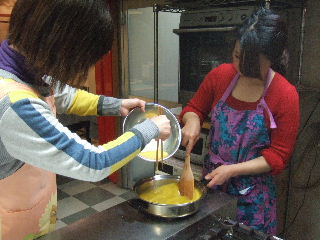 パンケーキの焼き具合のタイミングが微妙です！レモンカード、シロップのトッピングもうまくできました。チョコレートなどいろいろな飾りつけで、見た目も美しく、デザートとしてとてもおいしかったです。 |
|||
| ３．サフランライス | ||||
 |
||||
| サフランライスは、比較的簡単にできました。サフランの微妙な色合いがとても美しかったです。味も素敵でした。 | ||||
| 1月 中華料理 | ||||
| テーブルセッティング | 料理の出来上がり 楽しいおしゃべりで盛り上がる試食会 |
|||
| １．中華かゆ | ||||
|
中華かゆは、まず野菜の下準備からです。野菜はすべて３ｍｍ角にカットして、8分茹でにします。均一に大きさをそろえるのが楽しみでもあり、 ごま油で炒めた中華沢庵と黒豆を添えます。 当然ですが、中華かゆのベースは鶏がらスープです。 |
||||
| ２．スペアリブのしょうゆ煮 | ||||
|
スペアリブは、まず熱湯にさらして洗います。白ネギの青菜部分を入れて調味料でアクを取りながら1時間煮ます。 ねぎ、ピーマン、生姜、赤唐辛子でからめてスペアリブのしょうゆ煮の出来上がりです。 お客さんの笑顔を想いだしながら心を込めて、きれいに盛りつけます！ |
||||
| ３．ココナツ団子 | グラデナンシロップできれいな色付けです。粒あんを包むのも結構大変です。ココナツパウダーでまぶし、チェリーをトッピングでココナツ団子の出来上がりです。 | |||
| 盛り付けも大切な工程です。先生の眼も厳しい？ | ワイン教室ならではのシャンパンで乾杯です。ワインを飲むことと試食のために毎回参加のＫさんも満足そうです。 |
|||
| 12月 日本料理 ―郷土料理ー | ||||
| 料理の出来上がり | きりたんぽ鍋の取り分けサービス 本日のワインレクチャー | |||
１．きりたんぽ鍋 |
||||
寒い冬の夜は、暖かい”きりたんぽ鍋”が最高のおもてなしです！ 鶏むね肉、鶏きもを栄養エネルギーにして、ごぼう、油揚げ、こんにゃく、ねぎ、セリなどの具材満載です。 少し濃いめの”がらスープ”に多めのしょう油味のおいしさがが身体にしみわたります。 こんな日本料理にも、赤ワインが良く合いました。 |
 |
|||
| ２．小鉢 砂ずりの酢の物 | ||||
|
砂ずりは、すじ、白い部分をきれいに取り除きます。薄切りにして、たっぷりの小ねぎと生姜を調味料に漬けて出来上がりです。 さっぱりした”砂ずりの酢の物”の味は、本日の前菜として白ワインにピッタリでした。シャンパンにもよく合いました！ |
||||
| ３．甘味 柿のシロップ漬け | ||||
|
柿を8等分にカットして、砂糖のシロップに漬けるだけです。 ”柿のシロップ漬け”は、2〜3日冷蔵庫でねかせれば食べごろです。おいしいですよ！
|
||||
| レッスン中は、みんな真剣です。先生の指導も厳しいです。 | 乾杯の前の料理取り分け準備です。 いよいよシャンパンで乾杯です。今日もとても楽しいひと時でーす！ | |||
| 11月 西洋料理 | レッスン中は、みんな一生懸命です。先生の目も生徒の手元をしっかり見ています。 | |||
| 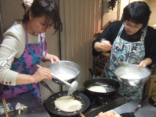 | ||||
| １．そば粉のガレット | ガレットは、そば粉から作ります。クレープは小麦粉からです。見た目もきれいな”そば粉のガレット”の出来上がりです。 | |||
| ２．自家製のチキンブイヨン | ||||
|
くず野菜をいっぱい入れた”手羽元のがらスープ”をまず作ります。にんにく、えのきを炒めて”チキンブイヨン”のスープの出来上がりです。 豚ロース肉のソテー用の人参もここで一緒にスープ煮しました。 |
||||
| ３．豚ロース肉のソテー 紅玉添え | ||||
|
豚肉の筋切りが大切です。そして、紅玉を焼きます。豚ロースのバター焼きはじっくりと焼き上げ、カルバドスでフランベして |
||||
| 試食会風景 | ||||
| 豊川先生○○才のお誕生日祝いの花束です！ おめでとうございます！ |
楽しい試食会の始まりです。まず、ワインの説明を聞きながらの乾杯です。 今回も楽しいおしゃべりがいつまでも続きましたが、その中でも話題の中心は”先生の若さ”を保つ秘訣についてでした。 |
|||
| 6月の韓国風料理 | ||||
| 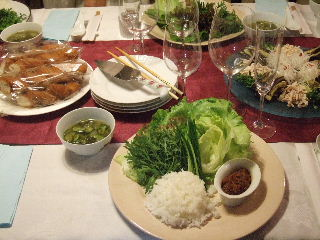 | ||||
| テーブルセッティング | 料理の出来上がり 試食会 | |||
| １．ちしゃ巻き | ||||
|
”韓国風ちしゃ巻き”は、野菜の新鮮さが勝負です。還元水で洗う時にごま油をちょっと入れます。 肉みそを作るときに火加減、煮詰め方がポイントです。！ 食べる時の野菜の包み方などのマナーも学びました。 |
||||
| ２．冷やしなす | ||||
|
なすは、きれいにカットして蒸します。白髪ねぎもきれいにつくりました。 鶏ささみの筋を取って、開いてから蒸します。そして、きれいに盛り付けます。”冷やしなす”の出来上がりです。 食べる時は小皿に盛って、特製タレをかけて、赤ワインと共に味わいました。 |
||||
| ３．わかめときゅうりのスープ | ||||
|
スープのだしは、濃いめの昆布だしです。鶏を蒸した時の煮汁も隠し味になってます。 ”キュウリとわかめの具たくさんスープ”です！さっぱりととてもおいしかったです。 |
||||
| 料理のレッスン風景 | 今回のワイン教室では、特製ワインが4本でした。赤ワインのデキャンタについて学び、その効果にびっくりしました。 | |||
| 5月 洋食 | ||||
| 料理の出来上がり | 酒屋ナカムラ店主の中村さんから、ワインのレクチャーを熱心に聴く生徒さんたち | |||
| １．野菜スープ サフラン風味 | ||||
|
野菜の準備。11種類の材料を使って”ベジタブルストック”を作ります。 サフランを加えて”野菜スープ”の出来上がりです。 きれいに切りそろえたせん切り野菜をトッピングにして食します。 |
||||
| ２・イカの春野菜の詰めもの | ||||
|
イカは、丁寧に扱いきれいに洗います。 詰め物はきれいに大きさを揃えて準備します。 イカに詰めてこんがり焼きます。 トマトソースを敷き、バルサミコ酢の飾りをして、”イカの春野菜の詰めもの”の出来上がりです。 |
||||
| ３．スパゲッティ カルボナーラ | ||||
|
スパゲッティは、標準通りにゆがきます。具を炒めて、生クリーム、卵黄を加えて”カルボナーラ”の出来上がりです。 |
||||
| 今回のワインクラスで味わった3本のワインたち！ | 赤ワインの試飲です！ 先生から特別提供の特製”野菜のテリーヌ”です。 | |||
| 1月 洋食 | 今月のメニューは、寒い冬を乗り切るための素敵な洋食です！ | |||
| テーブルセッティング | 料理の出来上がり | |||
今回もワインとともに楽しいおしゃべりタイムの試食会です！ |
||||
| １．野菜のポトフ（冬のダイエット向きスープ） | ||||
|
肝腎なのは、鶏手羽先のスープです。野菜をいろいろ入れてとてもコクのあるスープの出来上がりです。 |
||||
| ２．ほうれん草入りコロッケ | ||||
ほうれん草とチーズを合わせ、マッシュしたじゃがいもを加えて味付けです。 筒型のコロッケを作ります。きつね色にきれいに揚げたら”ほうれん草入りコロッケ”出来上がりです。 |
||||
| ３．マカロニグラタン | ||||
|
ホワイトソースは、とても丁寧に、そしてやさしい気持ちで作ります。 バター、玉ねぎを炒め、牛乳、マカロニを入れ、ホワイトソース、具を加えグラタン皿で焼けば、おいしい”マカロニグラタン”の出来上がりです。 |
||||
| 12月 冬の和食と重ね煮 | 今月は、”お正月料理”としても最適な和食です。 | |||
| テーブルセッティング | 出来上がり 白ワインでの試食会です。今回は二人だけのレッスンでした。 | |||
| １．伊達巻き | ||||
巻きすで形を整えれば、おいしい”伊達巻き”の出来上がりです。 |
||||
| ２．ブリ大根のしゃぶしゃぶ | ||||
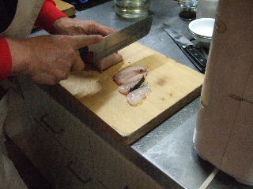 鰤は、新鮮な”柵”を使います。5mmのうす切りが大切です。大根もごくうすく（1mm）切ります。 しゃぶしゃぶは、5秒！春菊と柚子皮を添えて”ブリ大根のしゃぶしゃぶ”の出来上がりです。 |
||||
| ３．けんちん汁 | ||||
|
まず、材料の下拵えです。当然ですが、野菜は同じ大きさに揃えます。昆布を下敷きにすべての野菜を順々に重ねます。 強火で8分、そして弱火8分で出来上がりです。野菜（（7種）の素朴なうまみが出て、すてきな”けんちん汁”です。 |
||||
| ４．梅シロップで作る梅羊かん | ||||
寒天は、しばらく水につけておきます。そして、じっくりじっくりと溶かします。砂糖、水あめ、梅シロップを入れ、型で冷やします。 梅の香りがほのかに残る素敵な”梅羊かん”です。これは、先生としても作品として傑作の一つだとのことです。 |
||||
| 今月のレッスンは、旬を迎えた秋の味覚の定番いろいろです！ | ||||
| 9月 秋の和食 | 平成24年9月のレッスンより |
|||
| 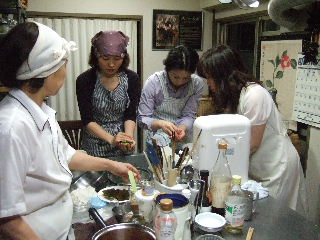 | ||||
| 旬の味覚いっぱいの”秋の和食”料理の出来上がりです！ | 真剣なまなざしでのレッスン風景。 南イタリア白ワイン”ﾏｼｬﾚﾘ ﾄﾚｯﾋﾟｱｰﾉ”をお供に試食会です。 | |||
| １．さんまご飯 | ||||
秋の旬の味覚”さんま”です。まず、きれいに洗います。 昆布だし水に、しょう油で調理して、さんまを載せ土鍋で炊き上げます。 薬味の青ねぎを、たっぷり載せて出来上がりです。さっくりと混ぜる時の香りがたまりません。庶民の味が抜群です。 |
||||
| ２．お手軽茶碗蒸し | ||||
|
”茶碗蒸し”には、鶏ささみです。すじを取って下味をつけます。 今回の茶わん蒸しは、手軽にできる”地獄蒸し”です。火加減と蒸し時間をレシピ通りにしっかり |
||||
| ３．酢の物 | ||||
これも秋の旬の野菜”糸うり”です。茹でると、糸のようにきれいにほぐれます。面白い！ キュウリと糸うりを立て塩で塩もみして、”加減酢”で食します。さっぱり味のおいしい”酢の物”です。 |
||||
| ４．焼きなすのみそ汁 | ||||
旬の野菜は、”丸なす”です。格子状の切れ目を入れて、両面に焼き色をつけます。ゆるめ溶きのからしを添えて赤みそ味の ”焼きなすのみそ汁”の出来上がりです。 |
||||
| 8月 西洋料理 | 平成24年8月のレッスンより |
|||
 |
||||
| 料理の出来上がり | テーブルセッティングのレッスン 食事の〆は、デザート”ヨーグルトテリーヌ”の試食です。 | |||
| １．冷製パスタ | ||||
巾広パスタ”リングイネ”をゆがいて、ズッキーニ、イタリアンパセリ、ボンレスハムなどを絡めます。 仕上げに、珍しい”花オクラ”を生ハムで巻いてパスタに添え、おいしい”冷製パスタ”の出来上がりです。 |
||||
| ２．手作りチーズのサラダ | ||||
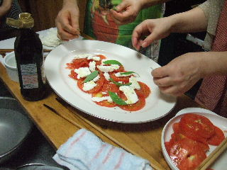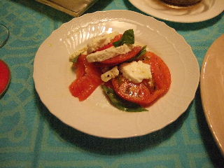 "手作りチーズ"は、牛乳、塩、レモンで比較的簡単にできます。テルテル坊主みたいにつるして水を切ります。 |
||||
| ３．ヨーグルトテリーヌ イン 巨峰ゼリー | ||||
 |
巨峰を、アルミホイル型に入れ、ぶどう液を流して冷凍し、巨峰ゼリーを作ります。 出来上がったテリーヌをカットして小皿に盛り、巨峰ソースをかけて”ヨーグルトテリーヌ イン 巨峰ゼリー”の出来上がりです。 |
|||
| レッスン中のスナップ | ||||
HPを見て、”この教室の雰囲気で是非料理を教わりたい”と直感した新しい生徒さん二人が入会です。緊張した雰囲気で、最初のレクチャーを受けています。 |
||||
今月のメニューは、”中華料理”です。 |
||||
| 3月 中華料理 | 平成24年3月のレッスンより |
|||
| 料理の出来上がり | 中華風のテーブルセッティング 試食会は、アルゼンチン産スパークリングワイン”デルフィンデルムンド”で乾杯！ | |||
| １．エビの天ぷら甘酢炒め | エビは、特大の大きさ。 卵と片栗粉でまぶす。 強火で揚げて、おいしいタレにからませ、香り油で仕上げ”エビの天ぷら甘酢炒め”の出来上がり | |||
|
セロリは、すじをとり4cm巾7oにカット。茹でて冷ましたセロリに、粉わさびドレッシングをかけた”セロリのサラダ中華風” セロリの葉は捨てないで、みりん・しょう油で炒め、サラダにあしらって盛り付ける！ |
||||
| ２．セロリのサラダ中華風 | ||||
| 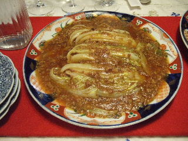 | ||||
| ３．白菜の揚げ煮 | 白菜は、1/4カット。1cm巾に先を残して切る。 手つきも鮮やかに豚ミンチを炒め、湯・豆板醤で白菜を煮たら”白菜の揚げ煮”の出来上がり | |||
| ４．小ねぎのスープ | 鶏がらスープに、椎茸のうす切り・小ねぎを入れた”小ねぎのスープ”。 簡単にできるスープでとてもおいしい！ | |||
| 2月 西洋料理 | 平成24年2月のレッスンより |
|||
| メイン料理の出来上がり | テーブルセッティング フランス赤ワイン”ローヌセギュレ”で試食会です | |||
牛バラは、佐賀伊万里和牛です。 塩・コショウして赤ワインで煮込みます。 存在感のある野菜を入れてじっくり煮込みます。 こんなにおいしい”ビーフシチュー”ができるなんて・・・・ビックリ！ |
||||
| １．ビーフシチュー | ||||
|
”クランブル”は、イギリスの家庭料理のデザートです。 リンゴ、クルミ、ミックスベリーが程よくまじりあったおいしさです。 ”クランブルのケーキ”のお供にドイツホットワイン”グリューワインチェリー”が最高でした。 |
||||
| ２．クランブルのケーキ | ||||
ビーフシチュー盛り付けのレッスン
|
リンゴの皮むき？も和やかな雰囲気で教わりました。 ホットワインは、デミコーヒーカップでいただきました。 クランブルケーキおいしさのポイントミックスベリーとチェリーワインの相性には、先生も納得！いつもながらおいしいワインのセレクト”酒屋ナカムラ”に感謝！ |
|||
| 1月 日本料理 | 平成24年1月のレッスンより |
|||
| お鮨・どびん蒸しの出来上がり | お鮨に良く合う”スパークリングワイン”で、新春の乾杯！ デザートは、雪帽子をかぶった”挽茶富士羹” | |||
|
すし飯に合わせる”具”を作る。そぼろは、手作り。 炊きあがったすし飯に、具を混ぜる。いか、えび、椎茸、錦糸卵をきれいに盛り付けて”ちらし鮨”の出来上がり！ |
||||
| １．ちらし鮨 | ||||
|
すだれの上に、海苔を敷き、”すし飯”を向こう1cm 手前5mmあけ、具を中心にして一気にきれいに形よく巻く。 切る時は包丁を1回ずつ濡らす。”細巻き鮨”の巻き方、切り方とも、簡単なようでなかなか難しかったです！
|
||||
| ２．細巻き鮨 | ||||
|
”どびん蒸し”の味の決め手は、何と言ってもおいしい”だし”！ そして今回は、白菜のうまみが主役。魚、茸、銀杏はどびん蒸し定番の材料。 |
||||
| ３．どびん蒸し | ||||
|
”寒天”は、ゆっくりしっかり溶かすこと。 頂上に積もった白雪は、”卵白”を泡立てたもの。それぞれを型に入れるタイミングが難しい。 出来上がりの姿は、とってもかわいい日本一の富士山。見た目も素晴らしい”挽茶富士羹”の出来上がりです。 |
||||
| ４．挽茶富士羹 | ||||
| 12月 寒い夜をロシア料理で | 平成23年12月のレッスンより |
|||
| テーブルセッティングのレクチャー | ロシア料理の出来上がり 試食会 | |||
|
粉を合わせ発酵したらこねる。 中味を炒める。 中味を入れ形よく丸める。 低温で揚げ焼き。 ”ピロシキ”は、フライパンで揚げ焼きとオーブンで焼くのと2種類。皮の包み方が難しい！揚げる時に中身が出てしまう。 |
||||
| １．ピロシキ | ||||
 |
ビーツをすりおろす。 肉、ベーコンを水煮。 材料を入れ煮込む。 きれいに盛り付ける。 ロシア料理の定番”ボルシチ”です。 |
|||
| ２．ボルシチ | ||||
|
キャベツはザク切り、塩をまぶす。 酢で一日漬ける。 食す時は、よく絞ってテーブルへ。 簡単にできる”サラダ”だけどとってもおいしい！ |
||||
| ３．ロシア風サラダ | ||||
| 11月 正月料理に作りましょう | 平成23年1１月のレッスンより |
|||
| 今月のメニューは、中華風正月料理です。 | ||||
| 中華風正月料理の出来上がり | テーブルセッティングのレクチャー ”フーバーロゼ スパークリング”とともに 試食会です。 | |||
|
豚肩ロースを4等分にカット。肉、野菜をジブロックに入れ、タレの調味料につけて1週間冷蔵。 きれいにスライスして、香草と一緒に盛り付けます。 |
||||
| １．チャーシュー | ||||
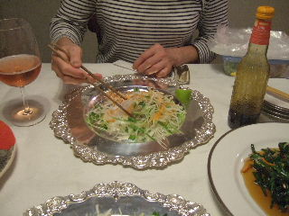 野菜を、きれいにけん切りにします。すべて同じ細さに揃えます。見た目が大切です！ 食す時、”中華風さしみ”に、中華風タレをかけて全体を混ぜながら食べます。 |
||||
| ２．中華風さしみ | ||||
|
材料の下準備です。 筍といんげんの油通し。ザーサイ、干しエビを入れて手早く炒めます。 |
||||
| ３．筍といんげんのザーサイ炒め | ||||
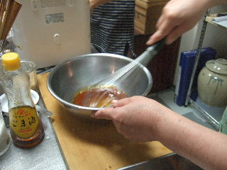 ニラ、大根、ニンジンを千六本に切り、塩をふって重しで2時間半漬けます。 甘酢を混ぜてから、熱々のごま油を唐辛子の上からかけて”野菜の甘酢漬け”の出来上がりです。 |
||||
| ４．野菜の甘酢漬け | ||||
| 10月 秋の夜長の酒肴 | 平成23年10月のレッスンより |
|||
”秋の夜長の酒肴”の出来上がり |
輪島塗りのお膳に盛り付けた”懐石膳”です。 和食によく合う甲州白ワインをお供に試食会です！ | |||
|
栗は、水につけておき、皮、渋皮を剥きます。 きれいに剥いた栗を1/2にカットして、うすくち・みりんでご飯と一緒に炊き上げます。 これぞ”秋の味覚”の定番です。 |
||||
| １．栗ごはん | ||||
|
鶏もも肉は、皮を下面にして、脂、筋をきれいにとり形を整えます。タコ糸の巻き方も大切です。 梅酒としょう油で煮て、しっかり味をからませます。こんがり焼きあがった”鶏の梅酒煮”の香ばしい味が忘れられません。 |
||||
| ２．鶏の梅酒煮 | ||||
|
ずいきの筋を取ります。3cmの長さにきれいにそろえて切って水にさらします。 くずで、とろみをつけて”吉野汁”の出来上がりです。盛り付けも丁寧に・・・・・。おろし生姜を添えてもおいしいです。 |
||||
| ３．汁物・・・ずいきの吉野汁 | ||||
”しんじょ”とは、魚・鶏などのすりみにすった芋・粉類を加えて蒸しまたは茹でたものです。今回は、芝エビと蓮根です。 ゆがいたオクラと一緒に盛り付けます。 |
||||
| ４．れんこんしんじょと小なすの炊き合わせ | ||||
|
懐石膳には欠かせない”だし巻き卵”です。 簡単そうですが、巻き方がとても難しかった！ でも、少々形が崩れていても、巻きすで形を整えれば合格です。 |
||||
| ５．だし巻き卵 | ||||
| 9月 洋食 | 平成23年９月のレッスンより |
|||
出来上がり
|
今回は、スペイン白ワイン”ゴデリア”が料理のお供です。 おいしいワインと料理に満足気な皆さんです！ 火曜日レッスンのうわさ（酒屋ナカムラのワイン）を聞きつけて参加したメンバー二人を迎えて5人の楽しいレッスンでした。 |
|||
ズッキーニの中に詰める野菜と肉を炒めます。詰めたズッキーニの表面を焼きます。 トマト、ズッキーニの中味、ローリエでじっくり煮込みます。きれいに盛り付けて出来上がり！ ちょっと旬を過ぎて高価なズッキーニでしたが、先生の取り計らいでおいしい料理を楽しめました。感謝！ |
||||
| １．ズッキーニのファルシ（詰め物） | ||||
|
”ヨーグルト”と水を混ぜる。 きゅうりをおろす。 きゅうり、にんにくを合わせ冷蔵。トッピングを添えて出来上がり。 見た目も涼しそうな冷えた”ヨーグルトスープ”の味は最高でした。 |
||||
| ２．ヨーグルトスープ | ||||
 |
”アイスクリーム”を作ります。 トマトを湯むき、シロップで煮込む。 きれいに盛り付けて出来上がりです！ アイスクリームって簡単にできるんですね。ちょっとびっくり・・・・。誰にも喜ばれそうな色鮮やかなデザートが出来上がりました。 |
|||
| ３．トマトのコンポート アイスクリーム添え | ||||
 |
||||
| レッスン風景1 | レッスン風景2 先生の厳しいレッスンに真剣なまなざしの生徒さん達です。 | |||
| 8月 夏の中華 前菜と主菜 | 平成23年８月のレッスンより |
|||
| テーブルセッティング | 本格中華料理の出来上がり おいしいワインとともに試食です。嬉しそう！ | |||
| 今回のワインは、酒屋ナカムラでセレクトしてもらった新着イタリア白ワイン｢ヴィーニャルンク・フリウラーノ」です。コクがありおいしかったです！暑い夏を乗り切るためにも、今回の中華料理は、疲れた身体にピッタリでした。 | ||||
|
ピータンは、アヒルの卵を調味液で漬け込んだものです。みじん切りにして、白ネギ、カシューナッツと一緒に盛り付けます。 おいしい合わせ調味料をかけて食べます。さっぱりとごま油の香りがきいていて美味です。 |
||||
| １．ピータン豆腐 | ||||
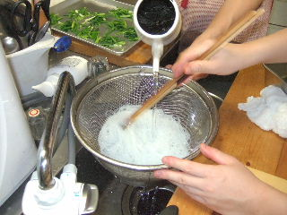 春雨と黄ニラ、きゅうりを合わせて、調味料で味付けをしたサラダです。 夏の中華料理にピッタリです。 |
||||
| ２．春雨サラダ | ||||
|
中華料理の定番「春巻き」です。豚肉の薄切り、白ネギ、白菜等シンプルな材料ですが、パリッと揚げた皮の感触が素敵です。 こんがりきつね色に揚げるタイミングがポイントです。 |
||||
| ３．春巻き | ||||
|
「アジの中華風あんかけ」です。中火でじっくり揚げることで、骨までおいしく食べられます。 野菜を炒める時、とろみ付けのタイミングが難しくちょっぴり失敗でした。でも、先生の盛り付けリカバリーでセーフでした。 |
||||
| ４．アジの中華風あんかけ | ||||
| ７月 和食（おそうざい） | 平成23年7月のレッスンより |
|||
| テーブルセッティング | 出来上がり たのしい試食会 | |||
| 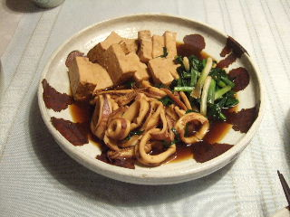 |
いかは、大きめのやりいか。鍋に、いか、焼き豆腐をきれいに並べ、熱いだしを加えて強火で煮ます。 アクをとり、弱火の落し蓋で20分。青ねぎを加えておいしい”いかの煮物”の出来上がりです。 これぞ、和食の醍醐味って感じです。しょうがのしぼり汁も隠し味となっておいしいです。 |
|||
| １．いかと焼き豆腐の煮物 | ||||
|
とまとを形のまま入れた味噌汁です。 厚揚げも入ったちょっと変わった味のおいしい味噌汁です。 |
||||
| ２．トマトの味噌汁 | ||||
|
旬のなすに、梅肉と針しょうがのきいただし汁で味を含ませます。 皮目を格子切りにし、揚げて油抜きをしてあります。 |
||||
| ３．なすの梅煮 | ||||
しょう油、酢、サラダ油、ごま油、ねぎのせん切り、にんにくの薄切、赤唐辛子などを程よくなじませた即席の”きゅうりの漬物”です。 |
||||
| ４．きゅうりの即席漬け | ||||
|
寒天とこしあんの簡単にできるおいしい”水ようかん”です。 簡単ですが、心をこめて丁寧にすること、温度管理をしっかりすることが大切です。 |
||||
| ５．水ようかん | ||||
| ６月 西洋料理−イタリアン風ー | 平成23年６月のレッスンより |
|||
|
鶏手羽元に下味をつけて、こんがりと焦げ色を付けます。セージ、ローズマリー、タイム等の香草を入れてビネガーでじっくり煮ます。スープを加え、スタフドオリーブ、グリンピースを入れて出来上がりです。見た目？よりずーっとおいしい！
|
||||
| １．鶏のビネガー風 | ||||
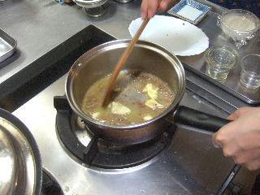 温野菜サラダは、生で食べる野菜と一瞬ゆがいて食べる野菜とのコラボレーションが美味です。ソースポットで温めたバーニャカウダーソースをつけて食します。アンチョビの隠し味が最高！
|
||||
| ２．温サラダ バーニャカウダーソース添え | ||||
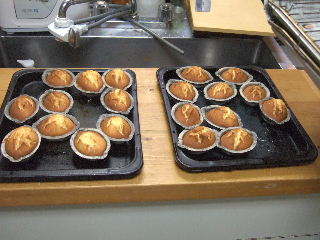 こんなにおいしいレモンケーキとは思いませんでした。 先生が「このケーキは、Ｉさんのデザートレパートリーの中で得意メニューの一つにしたらいいですよ！」って言われた意味がよくわかりました。早速レモン型を手に入れて家で作ってみようと思っているところです。
|
||||
| ３．レモンケーキ | ||||


 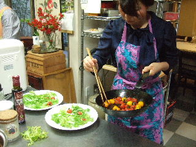
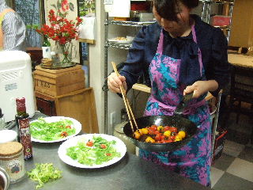


 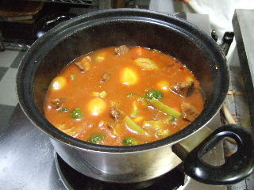
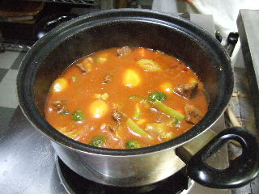